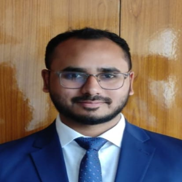

Making medical AI that clinicians can check.
I’m Rakhibul Hasan, an M.Sc. researcher at the Institute of Information Technology, Jahangirnagar University. I build deep learning models for medical images and work on explaining why they decide what they decide. I’m open to PhD positions and research collaborations.
About

I work on medical image analysis, deep learning and explainable AI, with a focus on tools that are reliable and interpretable enough for clinical screening. My M.Sc. at IIT, Jahangirnagar University is supervised by Dr. M. Shamim Kaiser and Prof. Mohammad Abu Yousuf.
Before research, I spent time as an R&D Engineer on the routing team at Shanghai BDCOM, writing network device software. I started in competitive programming and reached Codeforces Specialist. I enjoy teaching and have run programming and machine learning workshops.
Updates
Research interests
I want screening models whose predictions come with evidence a clinician can inspect: saliency maps, grade-aware outputs, and error behavior that matches how clinical severity scales actually work.
Publications
3D MRI reconstruction and brain tumor diagnosis with deep learning and explainable AI
TriFuse-DR: diabetic retinopathy grading
Projects
OCMoE: ordinal classification mixture-of-experts
A mixture-of-experts model that respects the ordered nature of clinical severity grades, aimed at screening tasks.
TriFuse-DR
Fusing several backbone networks to grade diabetic retinopathy from fundus images.
3D MRI reconstruction and tumor diagnosis
Reconstructing 3D volumes from MRI and classifying brain tumors, with explanations of the model’s decisions.
Experience
R&D Engineer, Routing team
Built network device software, including routing technologies and embedded systems.
Tutor and workshop instructor
Taught physics and mathematics to SSC, HSC and admission candidates, and led programming and machine learning workshops.
Education
M.Sc., Institute of Information Technology
Supervisors: Dr. M. Shamim Kaiser and Prof. Mohammad Abu Yousuf.
B.Sc., Institute of Information Technology
SSC and HSC, Science
Awards and skills
NST Fellowship
Ministry of Science and Technology, Bangladesh.
Codeforces Specialist; ICPC regional Honorable Mentions
Multiple regional contests.
Machine learning
Systems and tools
Contact
For PhD supervision, collaboration or questions about my papers, email me.
rakhibulhasan98@gmail.com